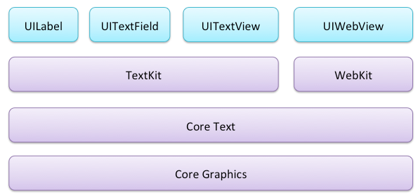

富文本
TextKit
lib: TextKitNotepad-starter

- 动态字体（Dynamic type）
- 凸版印刷体效果（Letterpress effects）
- 路径排除（Exclusion paths）
- 动态文本格式化和存储（Dynamic text formatting and storage）
AttributedString
AttributedString究竟可以设置哪些属性，具体来说，有以下21个：
- NSFontAttributeName 设置字体属性，默认值：字体：Helvetica(Neue) 字号：12
- NSForegroundColorAttributeNam 设置字体颜色，取值为 UIColor对象，默认值为黑色
- NSBackgroundColorAttributeName 设置字体所在区域背景颜色，取值为 UIColor对象，默认值为nil, 透明色
- NSLigatureAttributeName 设置连体属性，取值为NSNumber 对象(整数)，0 表示没有连体字符，1 表示使用默认的连体字符
- NSKernAttributeName 设定字符间距，取值为 NSNumber 对象（整数），正值间距加宽，负值间距变窄
- NSStrikethroughStyleAttributeName 设置删除线，取值为 NSNumber 对象（整数）
- NSStrikethroughColorAttributeName 设置删除线颜色，取值为 UIColor 对象，默认值为黑色
- NSUnderlineStyleAttributeName 设置下划线，取值为 NSNumber 对象（整数），枚举常量 NSUnderlineStyle中的值，与删除线类似
- NSUnderlineColorAttributeName 设置下划线颜色，取值为 UIColor 对象，默认值为黑色
- NSStrokeWidthAttributeName 设置笔画宽度，取值为 NSNumber 对象（整数），负值填充效果，正值中空效果
- NSStrokeColorAttributeName 填充部分颜色，不是字体颜色，取值为 UIColor 对象
- NSShadowAttributeName 设置阴影属性，取值为 NSShadow 对象
- NSTextEffectAttributeName 设置文本特殊效果，取值为 NSString 对象，目前只有图版印刷效果可用：
- NSBaselineOffsetAttributeName 设置基线偏移值，取值为 NSNumber （float）,正值上偏，负值下偏
- NSObliquenessAttributeName 设置字形倾斜度，取值为 NSNumber （float）,正值右倾，负值左倾
- NSExpansionAttributeName 设置文本横向拉伸属性，取值为 NSNumber （float）,正值横向拉伸文本，负值横向压缩文本
- NSWritingDirectionAttributeName 设置文字书写方向，从左向右书写或者从右向左书写
- NSVerticalGlyphFormAttributeName 设置文字排版方向，取值为 NSNumber 对象(整数)，0 表示横排文本，1 表示竖排文本
- NSLinkAttributeName 设置链接属性，点击后调用浏览器打开指定URL地址
- NSAttachmentAttributeName 设置文本附件,取值为NSTextAttachment对象,常用于文字图片混排
- NSParagraphStyleAttributeName 设置文本段落排版格式，取值为 NSParagraphStyle 对象